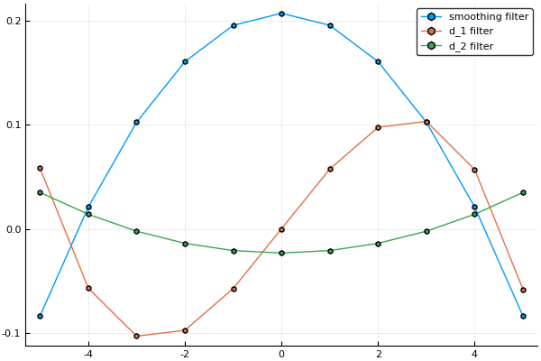
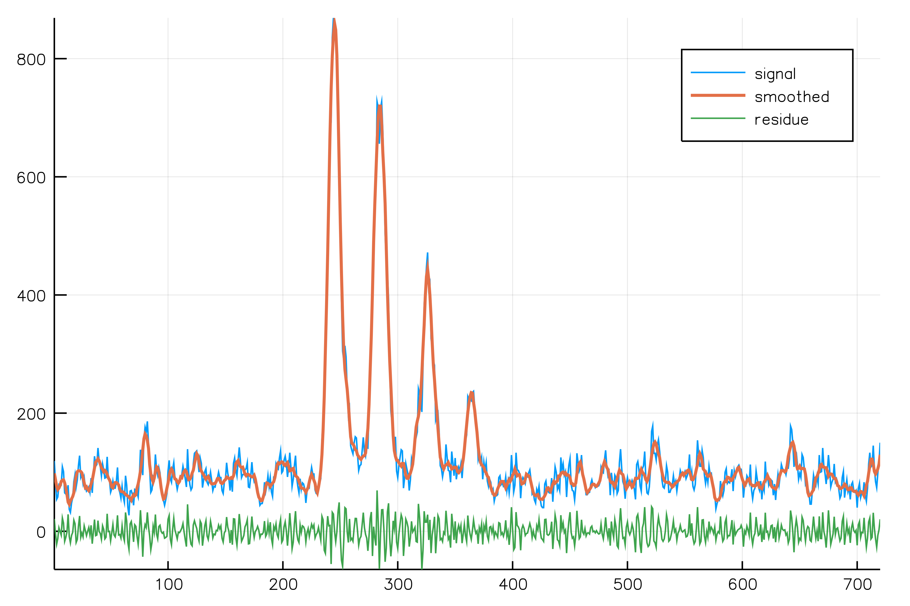
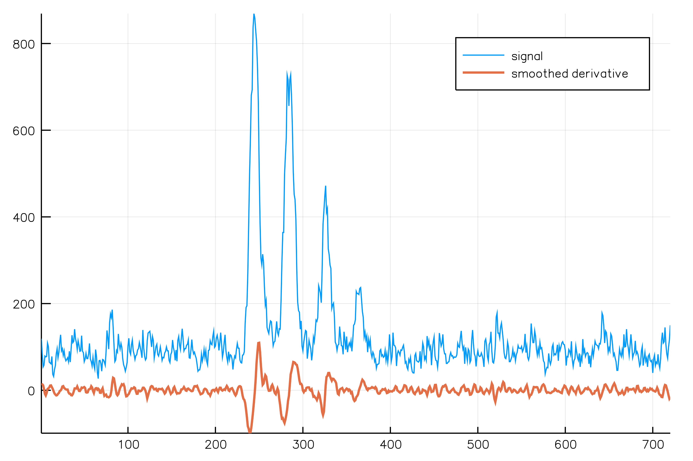
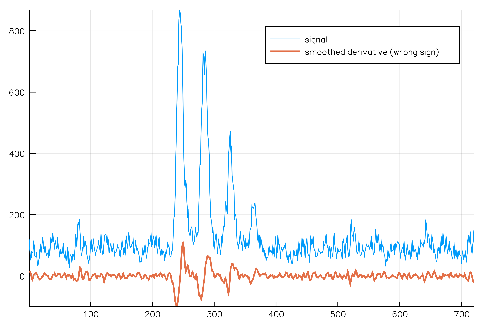

Savitzky-Golay filters
Table of Contents
1 Introduction
Full API documentation is described in the Savitzky-Golay Filters manual section.
Details are explained in Savitzky-Golay filters.
The recommended new API is described in New API.
2 Savitzky-Golay filters
Creates a set of Savitzky-Golay filters. In this example, window width is \(11=2*5+1\) and polynomial degree is \(3\).
sg = SG_Filter(Float64,halfWidth=5,degree=3);
This can be checked with
length(sg) polynomialOrder(sg)
11 3
Savitzky-Golay filters can be used to smooth or to compute smoothed
derivatives of a signal. The associated filter is obtained thanks to
the filter function.
d0filter=filter(sg,derivativeOrder=0); d1filter=filter(sg,derivativeOrder=1); d2filter=filter(sg,derivativeOrder=2); p=plot(range(d0filter),fcoef(d0filter), markershape = :hexagon,label="smoothing filter") p=plot!(range(d1filter),fcoef(d1filter),markershape = :hexagon,label="d_1 filter") p=plot!(range(d2filter),fcoef(d2filter),markershape = :hexagon,label="d_2 filter")

Figure 1: Savitzky-Golay filters
Maximum derivative order is equal to the polynomial order, however there is a dedicated function:
maxDerivativeOrder(sg)
3
2.1 Smoothing example
First load a signal
signal=readcsv("../data/signal_1.csv");
signal=signal[:,2];
then compute a smoothed version
smoothed=directCrossCorrelation(d0filter,signal,ConstantBE,ConstantBE) p=plot(signal,label="signal") p=plot!(smoothed, label="smoothed",linewidth=2) p=plot!(signal-smoothed, label="residue")

Figure 2: Savitzky-Golay smoothing
Caveat: to apply Savitzky-Golay one must use
directCrossCorrelation and not directConv, otherwise the filter
coefficients are taken in the reversed order. This has no impact on
smoothing because the filters are symmetric, but this would change
the sign of the smoothed odd-order (\(f'\), \(f'''\)…) derivatives that
have antisymmetric filter coefficients. You can see Fig. Filter
coefficients and see this detailed illustration.
2.2 First order smoothed derivative
Smoothed first order derivative example:
smoothed_d1 = directCrossCorrelation(d1filter,signal,ConstantBE,ConstantBE) p=plot(signal,label="signal") p=plot!(smoothed_d1, label="smoothed derivative",linewidth=2)

Figure 3: Savitzky-Golay smoothed first order derivative
2.2.1 directConv instead of directCrossCorrelation
This is what happens if we use directConv instead of
directCrossCorrelation, \(f'\) has the wrong sign.
smoothed_d1_with_conv = directConv(d1filter,signal,ConstantBE,ConstantBE) p=plot(signal,label="signal") p=plot!(smoothed_d1_with_conv, label="smoothed derivative (wrong sign)",linewidth=2)

Figure 4: Savitzky-Golay with directConv instead of directCrossCorrelation results in wrong sign for odd-order derivatives
2.3 New API
To make SG filter usage easier we have introduced dedicated
apply_SG_filter and apply_SG_filter2D functions:
sg = SG_Filter(Float64,halfWidth=5,degree=3); smoothed_1=apply_SG_filter(signal,sg,derivativeOrder=1); # new API smoothed_2=directCrossCorrelation(filter(sg,derivativeOrder=1),signal,ConstantBE,ConstantBE); # old approach @assert isapprox(smoothed_1,smoothed_2)